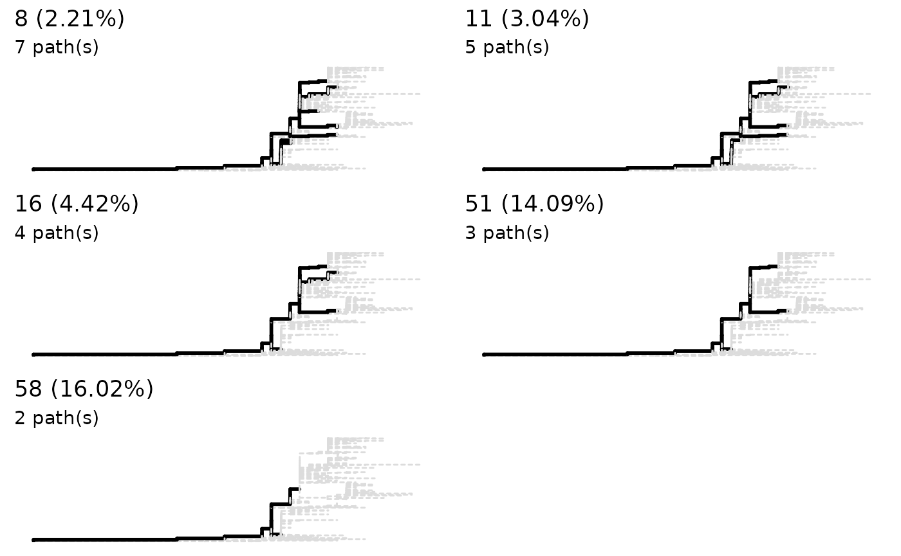
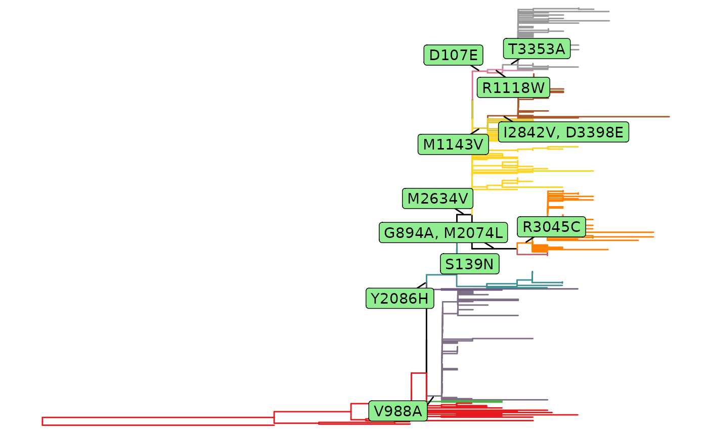
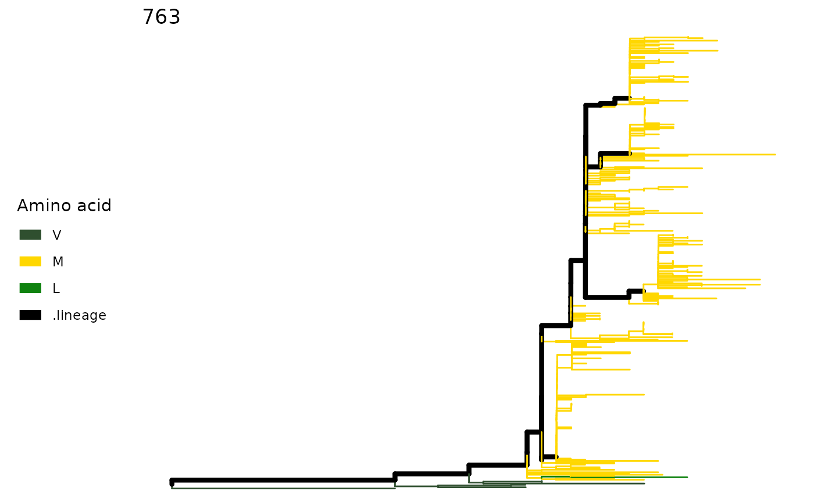
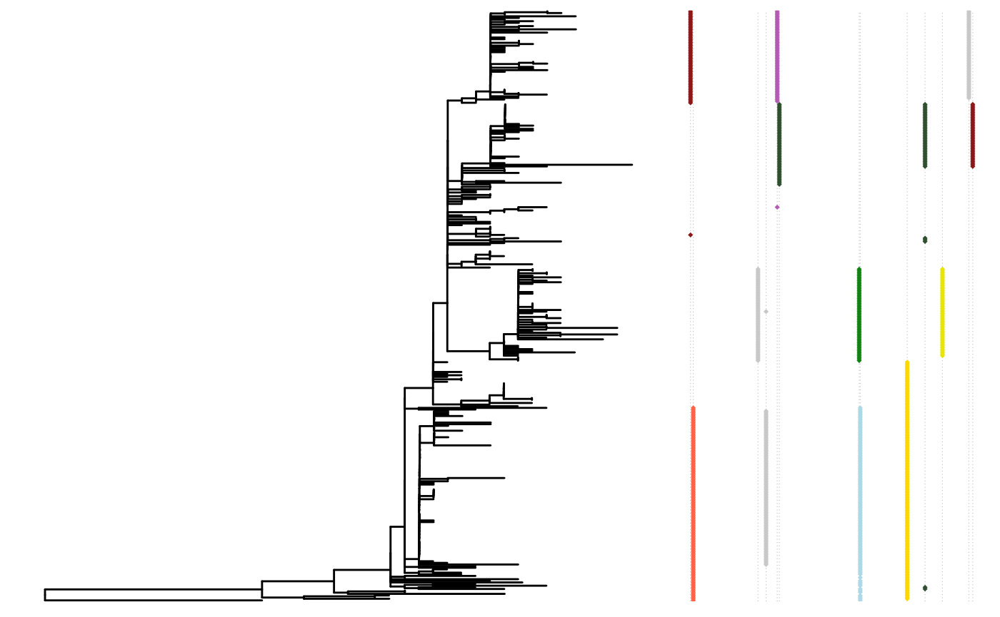

Abstract
Detection of site fixation in molecular evolution.
Introduction
The sitePath package does hierarchical search for fixation events given multiple sequence alignment and phylogenetic tree. These fixation events can be specific to a phylogenetic lineages or shared by multiple lineages. This is achieved by three major steps:
- Import tree and sequence alignment
- Resolve phylogenetic lineages
- Hierarchical search for lineage-dependent fixation events
Import data
There’re various R packages for parsing phylogenetic tree and multiple sequence alignment files. For now, sitepath accepts phylo object and alignment object. Functions from ggtree and seqinr are able to handle most file formats.
Parse phylogenetic tree
The S3 phylo class is a common data structure for phylogenetic analysis in R. The CRAN package ape provides basic parsing function for reading tree files. The Bioconductor package ggtree provides more comprehensive parsing utilities.
library(sitePath) tree_file <- system.file("extdata", "ZIKV.newick", package = "sitePath") tree <- read.tree(tree_file)
It is highly recommended that the file stores a rooted tree as R would consider the tree is rooted by default and re-rooting the tree in R is difficult.
Parse and match sequence alignment
Most multiple sequence alignment format can be parsed by seqinr. sitePath has a wrapper function for parsing and adding the sequence alignment.
alignment_file <- system.file("extdata", "ZIKV.fasta", package = "sitePath") tree <- addMSA(tree, alignment_file, "fasta")
Phylogenetic lineages
The names in tree and aligment must be matched. We use a tip-to-root algorithm to trim tree leaves/tips to expose the major branches. Before finding putative phylogenetic lineages, there involves a few more steps to evalute the impact of threshold on result.
The impact of threshold on resolving lineages
In the current version, the resolving function only takes sequence similarity as one single threshold. The impact of threshold depends on the tree topology hence there is no universal choice. The function sneakPeak samples thresholds and calculates the resulting number of paths. The use of this function can be of great help in choosing the threshold.
preassessment <- sneakPeek(tree, makePlot = TRUE)

Choose a threshold by yourself
Use the return of the function lineagePath for downstream analysis. The choice of the threshold really depends. You can use the result from sneakPeak as a reference for threhold choosing. Here the default value is used.
paths <- lineagePath(tree) paths #> This is a 'lineagePath' object. #> #> 4 lineage paths using 5% as "major SNP" threshold
You can visualize the result.
plot(paths)

Detecting fixation and parallel mutations
Now you’re ready to find fixation and parallel mutations.
Entropy minimization
The sitesMinEntropy function perform entropy minimization on every site for each lineage. The fixation and parallel mutations can be derived from the function’s return value.
minEntropy <- sitesMinEntropy(paths)
Fixation mutations
The hierarchical search is done by fixationSites function. The function detects the site with fixation mutation.
fixations <- fixationSites(minEntropy) fixations #> This is a 'fixationSites' object. #> #> Result for 4 paths: #> #> 988 139 894 2074 2086 2634 3045 107 1118 3353 1143 2842 3398 #> No reference sequence specified. Using alignment numbering
If you want to retrieve the result of a single site, you can pass the result of fixationSites and the site index to extractSite function. The output is a sitePath object which stores the tip names.
sp <- extractSite(fixations, 139)
It is also possible to retrieve the tips involved in the fixation of the site.
extractTips(fixations, 139) #> [[1]] #> [1] "ANK57896" "AMD61711" "AQS26698" "APG56458" "AUI42289" "AMR39834" #> [7] "AWH65848" "APO08504" "AMX81917" "AVZ47169" "AMX81916" "AMD61710" #> [13] "AMK49492" "AMX81915" "AOC50652" "APH11611" "BBC70847" "AUF35022" #> [19] "ATL14618" "AUF35021" "AVV62004" "BAX00477" #> attr(,"AA") #> [1] "S" #> #> [[2]] #> [1] "BAV89190" "AOI20067" "AMM43325" "AMM43326" "AUI42329" #> [6] "AUI42330" "ANC90425" "AMT75536" "ANF16414" "AMR68932" #> [11] "ANA12599" "AMM39806" "AMR39830" "AMV49165" "AMO03410" #> [16] "ANO46307" "AVG19275" "ANN44857" "ANO46306" "ANO46309" #> [21] "ANO46305" "ANO46303" "ARB08102" "ANO46302" "AHZ13508" #> [26] "ANO46304" "ANO46301" "ANO46308" "AOG18296" "AOO19564" #> [31] "AUI42194" "APC60215" "AMQ48986" "ATG29307" "ART29828" #> [36] "AWF93617" "ATG29284" "ATG29287" "ATG29303" "AWF93619" #> [41] "AWF93618" "AQM74762" "AUD54964" "AQM74761" "ATG29306" #> [46] "ASL68974" "ATG29267" "ASL68978" "AQX32985" "ATG29315" #> [51] "AQZ41956" "ARI68105" "ASU55505" "AQZ41949" "ASL68979" #> [56] "ATG29299" "ATI21641" "ATG29270" "ATG29291" "AOY08536" #> [61] "ANO46297" "ANO46298" "AQZ41950" "AQZ41951" "ARU07183" #> [66] "ANG09399" "AQZ41954" "AOY08533" "AQZ41947" "AQZ41948" #> [71] "ATG29292" "ATG29295" "AOW32303" "AVZ25033" "AOC50654" #> [76] "AQZ41953" "ATG29301" "ATG29276" "APO08503" "AMC13913" #> [81] "AMC13912" "APO39243" "APO39229" "AQZ41952" "AQZ41955" #> [86] "AMK49165" "ARB07976" "APB03018" "AMC13911" "APB03019" #> [91] "ASU55416" "ANK57897" "AWH65849" "AMZ03556" "ASU55417" #> [96] "ANW07476" "APY24199" "AMA12086" "AMH87239" "APY24198" #> [101] "APO36913" "ALX35659" "AOG18295" "ANQ92019" "AML81028" #> [106] "APY24200" "AMD16557" "ARU07074" "AOX49264" "AOX49265" #> [111] "AOY08518" "ARB07962" "AMX81919" "AMM39805" "ARX97119" #> [116] "AMB37295" "AMK79468" "AML82110" "AMR39831" "AMX81918" #> [121] "ANC90426" "ALU33341" "ASB32509" "AMA12085" "AMU04506" #> [126] "AMA12087" "AMA12084" "AQU12485" "AMS00611" "AMQ48981" #> [131] "AOY08538" "APH11492" "AOY08517" "AOY08541" "AOO54270" #> [136] "AND01116" "ARB07967" "ANF04752" "AOE22997" "APQ41782" #> [141] "APQ41786" "ASU55393" "ASU55404" "ASU55423" "ANB66182" #> [146] "ASU55425" "ASU55420" "AQX32986" "ASU55422" "APQ41784" #> [151] "ANC90428" "ASU55415" "ASU55418" "ARM59239" "ASU55408" #> [156] "ASU55424" "ASU55390" "ASU55419" "ASU55391" "AMM39804" #> [161] "ASU55411" "ANB66183" "ASU55421" "AMZ03557" "ASU55392" #> [166] "AQX32987" "ASU55403" "ASU55399" "APQ41783" "ANS60026" #> [171] "ANB66184" "ASU55426" "ASU55412" "ASU55413" "ASU55410" #> [176] "ASU55397" "ASU55400" "ASU55409" "APB03017" "ASU55395" #> [181] "ASU55396" "AOY08524" "ASU55394" "ASU55414" "ASU55405" #> [186] "AMC33116" "ASU55406" "ASU55398" "ASU55407" "AMQ34003" #> [191] "AMQ34004" "ASU55401" "ASU55402" "ARU07076" "AMK49164" #> [196] "APG56457" "AOR82892" "ATB53752" "ANH10698" "AOR82893" #> [201] "ARU07075" "AMB18850" "YP_009428568" "AMQ48982" "ART29823" #> [206] "APW84876" "ASK51714" "ARB07953" "APW84872" "AOY08525" #> [211] "APW84873" "AOY08535" "AVZ25035" "ARB07932" "AOY08523" #> [216] "AOY08542" "ASW34087" "AOY08537" "APB03020" "ART29826" #> [221] "ART29825" "AOS90220" "AMN14620" "APW84874" "APW84875" #> [226] "BAV82373" "AOS90221" "AOS90224" "APB03021" "APO39232" #> [231] "AOS90223" "APO39237" "ANH22038" "APW84877" "APO39236" #> [236] "AOY08546" "AOY08516" "APO39233" "AOS90222" "AOO53981" #> [241] "AOY08521" "AOO85388" "APO39228" #> attr(,"AA") #> [1] "N"
Use plot on a sitePath object to visualize the fixation mutation of a single site. Alternatively, use plotSingleSite on an fixationSites object with the site specified.
plot(sp)

plotSingleSite(fixations, 139) #> Warning: `mutate_()` is deprecated as of dplyr 0.7.0. #> Please use `mutate()` instead. #> See vignette('programming') for more help #> This warning is displayed once every 8 hours. #> Call `lifecycle::last_warnings()` to see where this warning was generated.

To have an overall view of the transition of fixation mutation, use plot on an fixationSites object.
plot(fixations)

Parallel mutation
Parallel mutation can be found by the parallelSites function. There are four ways of defining the parallel mutation: all, exact, pre and post. Here exact is used as an example.
paraSites <- parallelSites(minEntropy, mutMode = "exact") paraSites #> This is a 'parallelSites' object. #> #> Result for 4 paths: #> #> 105 1717 988 1264 1226 3076 106 573 2611 2787 2749 3162 1857 1016 1171 2634 2357 1327 3046 3328 940 1404 1180 #> No reference sequence specified. Using alignment numbering
The result of a single site can be visualized by plotSingleSite function.
plotSingleSite(paraSites, 105) #> Warning: `filter_()` is deprecated as of dplyr 0.7.0. #> Please use `filter()` instead. #> See vignette('programming') for more help #> This warning is displayed once every 8 hours. #> Call `lifecycle::last_warnings()` to see where this warning was generated.

Additional functions
This part is extra and experimental but might be useful when pre-assessing your data. We’ll use an example to demonstrate.
Inspect one site
The plotSingleSite function will color the tree according to amino acids if you use the output of lineagePath function.
plotSingleSite(paths, 139)

plotSingleSite(paths, 763)

SNP sites
An SNP site could potentially undergo fixation event. The SNPsites function predicts possible SNP sites and the result could be what you’ll expect to be fixation mutation. Also, a tree plot with mutation could be visualized with plotMutSites function.
snps <- SNPsites(tree) plotMutSites(snps)

plotSingleSite(paths, snps[4])
plotSingleSite(paths, snps[5])
Session info
sessionInfo() #> R version 4.0.2 (2020-06-22) #> Platform: x86_64-pc-linux-gnu (64-bit) #> Running under: Ubuntu 20.04.1 LTS #> #> Matrix products: default #> BLAS/LAPACK: /usr/lib/x86_64-linux-gnu/openblas-pthread/libopenblasp-r0.3.8.so #> #> locale: #> [1] LC_CTYPE=en_US.UTF-8 LC_NUMERIC=C #> [3] LC_TIME=en_US.UTF-8 LC_COLLATE=en_US.UTF-8 #> [5] LC_MONETARY=en_US.UTF-8 LC_MESSAGES=C #> [7] LC_PAPER=en_US.UTF-8 LC_NAME=C #> [9] LC_ADDRESS=C LC_TELEPHONE=C #> [11] LC_MEASUREMENT=en_US.UTF-8 LC_IDENTIFICATION=C #> #> attached base packages: #> [1] stats graphics grDevices utils datasets methods base #> #> other attached packages: #> [1] sitePath_1.5.24 BiocStyle_2.17.1 #> #> loaded via a namespace (and not attached): #> [1] treeio_1.13.1 tidyselect_1.1.0 xfun_0.18 #> [4] purrr_0.3.4 lattice_0.20-41 colorspace_1.4-1 #> [7] vctrs_0.3.4 generics_0.0.2 htmltools_0.5.0 #> [10] yaml_2.2.1 rlang_0.4.8 pkgdown_1.6.1.9000 #> [13] pillar_1.4.6 glue_1.4.2 RColorBrewer_1.1-2 #> [16] rvcheck_0.1.8 lifecycle_0.2.0 stringr_1.4.0 #> [19] munsell_0.5.0 gtable_0.3.0 ragg_0.3.1 #> [22] memoise_1.1.0 evaluate_0.14 labeling_0.3 #> [25] knitr_1.30 parallel_4.0.2 Rcpp_1.0.5 #> [28] scales_1.1.1 backports_1.1.10 BiocManager_1.30.10 #> [31] desc_1.2.0 jsonlite_1.7.1 farver_2.0.3 #> [34] systemfonts_0.3.2 fs_1.5.0 gridExtra_2.3 #> [37] ggplot2_3.3.2 aplot_0.0.6 digest_0.6.25 #> [40] stringi_1.5.3 bookdown_0.20 dplyr_1.0.2 #> [43] ggrepel_0.8.2 ade4_1.7-15 grid_4.0.2 #> [46] rprojroot_1.3-2 ggtree_2.3.6 tools_4.0.2 #> [49] magrittr_1.5 lazyeval_0.2.2 patchwork_1.0.1 #> [52] tibble_3.0.3 seqinr_3.6-1 crayon_1.3.4 #> [55] ape_5.4-1 tidyr_1.1.2 pkgconfig_2.0.3 #> [58] MASS_7.3-51.6 ellipsis_0.3.1 tidytree_0.3.3 #> [61] assertthat_0.2.1 rmarkdown_2.4 R6_2.4.1 #> [64] nlme_3.1-148 compiler_4.0.2